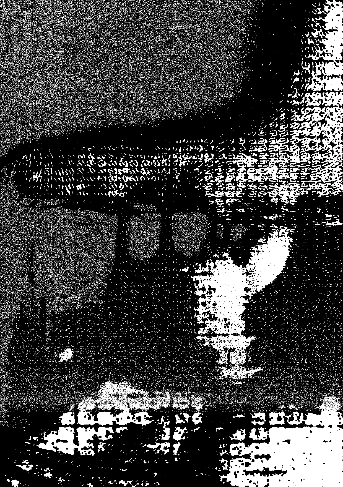
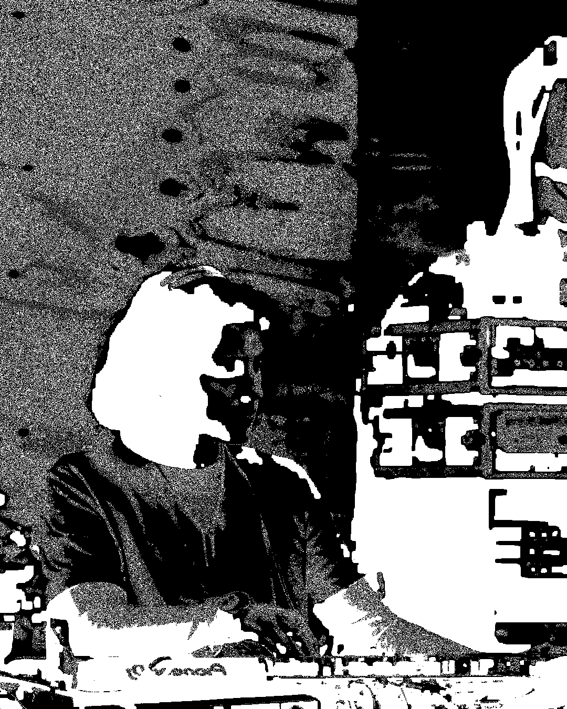
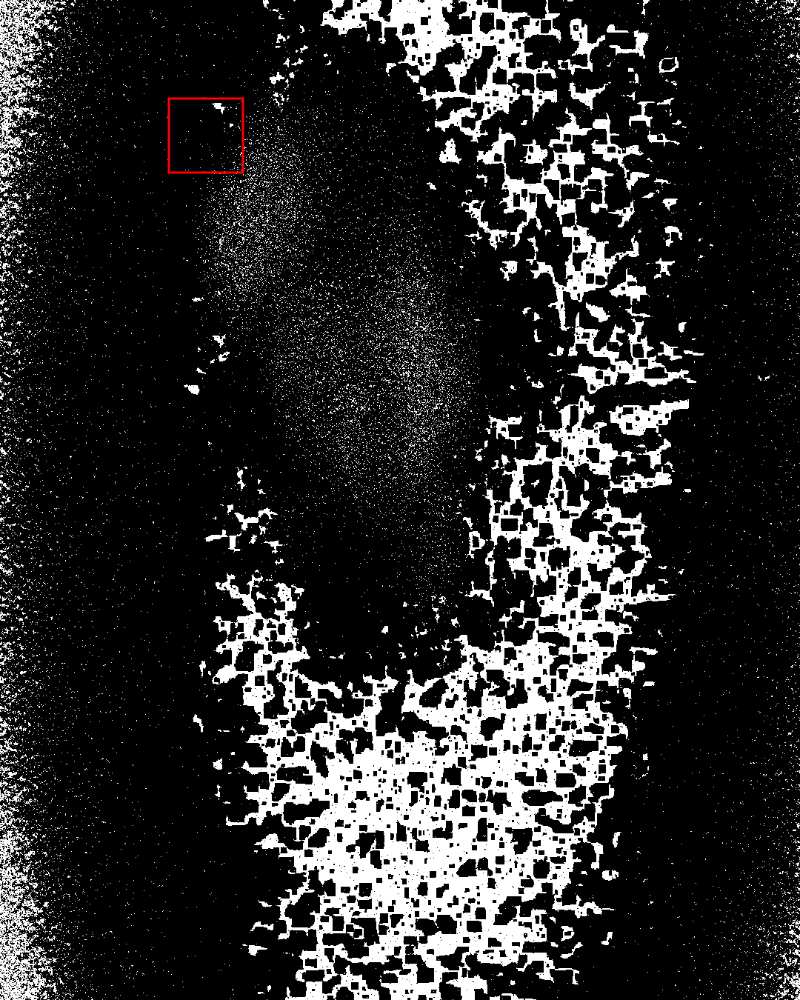
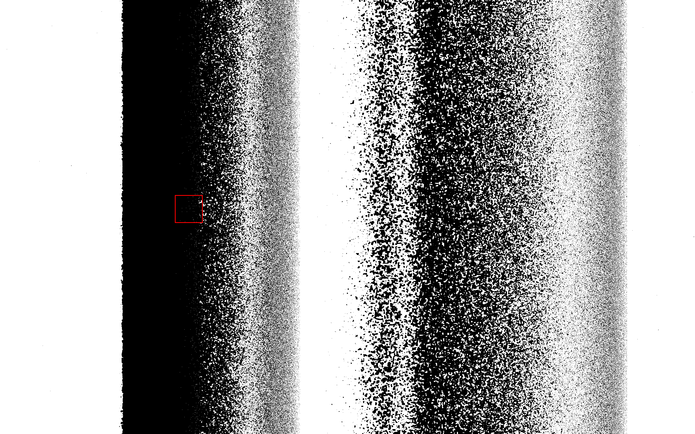

Independent project
2025, Amsterdam

Named after the common mispronounciation of Ernst Ising, one of the inventors of the Lenz-Ising model of ferromagnetism, Eyesing is an exploratory tool for visualising phase transitions in virtual substances. The ubiquitous scientific model finds common use in molecular physics, biology and sociology, where relevant parameters (physical temperature, cell membrane fluctuations, social dynamics) perturb the state of a system beyond critical points.

Programmed in Processing and accepting multiple types of video, audio and MIDI input, Eyesing can perform stochastic image processing by interpreting colour values as probabilities. A pattern scanning agent adaptively traverses a parameter space overlaid by the black-and-white image, balancing the simulation parameters about the edge of criticality. Through a perpetual cycle of randomness and self-organisation, the image constantly evolves, exploring the boundaries of pattern perception.

The algorithm’s first public display is in the form of an audio-responsive visual for the music event Surveillance Technologies at OT301 (Amsterdam) in 2026.

Check out a demo here (Vimeo).
More info here.